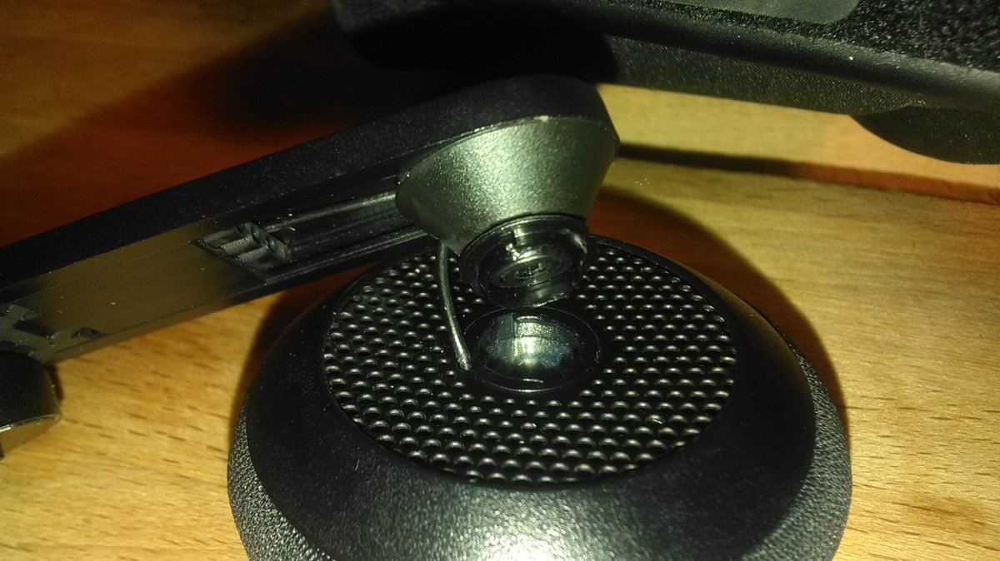

https://twitter.com/wetgenes/status/967813579696111617 @oculus This looks like the same thing but that thread was not helpfull https://forums.oculusvr.com/community/discussion/56702/left-headphone-fell-off-but-audio-still-works-how-do-i-screw-it-back-on
https://twitter.com/IcepickInTheory/status/967832207879532545 @IcepickInTheory @oculus Line it up right and press hard enough and it clips right back in :) Kind of a scary amount of force though...
So this is apparently something that can happen to @oculus headphones. It just felt a bit loose so I took it off and now it dangles. 
The poise and beauty of a young Father Jack. https://twitter.com/41Strange/status/967515110632652800
@CharlotteGore Sorry can't hear you. Busy watching Johnny Mnemonic for the great acting and Dolph on Dolph action.
@CharlotteGore Full disclosure, I do not believe this is our first 5 year break and at this point I think we would want to redo the site with a new backend before updating it.
old sites are the best :)
Yet Another Gif Export test. Direct from #Fun64 now thats what I call over engineering a comic.
I wonder if we should resurrect the old http://4lfa.com site? again? it has only been 5 years since the last post.
The next #Bradford #GameDev meetup in a pub is in T-3 hours :)
Now with an actual official meetup page https://www.meetup.com/Badonkadonk/events/246880056/
#BDdonk

https://twitter.com/wetgenes/status/962348280855384064 @PixelGuff Thinking back I can even remember how it happened.
His father compared all the specs of the various machines and decided that Oric was the most powerful of them all.
I wonder if they ever recovered from the stigma?
https://twitter.com/PixelGuff/status/962347941414555648 @PixelGuff Everyone knew one kid with an Oric.
That was the problem.
https://twitter.com/wetgenes/status/962346102111588357 @PixelGuff That said, I'm pretty certain you could get bullied if you owned the wrong sort of 8bit computer which could easily happen with so many options.
Well maybe not bullied but I remember pitying a friend who ended up with an Oric :)
https://twitter.com/PixelGuff/status/962291357376278530 @PixelGuff I figure this is always Merkin problems, same as the Atari crash thing which was pretty irrelevant over here.
Most kids had an 8bit something although I suspect a lot of children where just used as piracy mules by their fathers.
Dark farming sim you say?
Hmmmmmm https://twitter.com/pcgamer/status/962118934878187520
https://twitter.com/wetgenes/status/961623881747492864 that was a failure to quote a tweet? Adding a you tube link ate the quoted tweet?
The clue to the intended reference is 15000 things that Ns lay.
https://twitter.com/IcepickInTheory/status/960160530940989440 @IcepickInTheory @CharlotteGore @shi Aye, aye, my captain.
Some fat pixel graphical experimentation and testing by @shi #screenshotsaturday #fun64
Happy rogue-like the film day everyone!